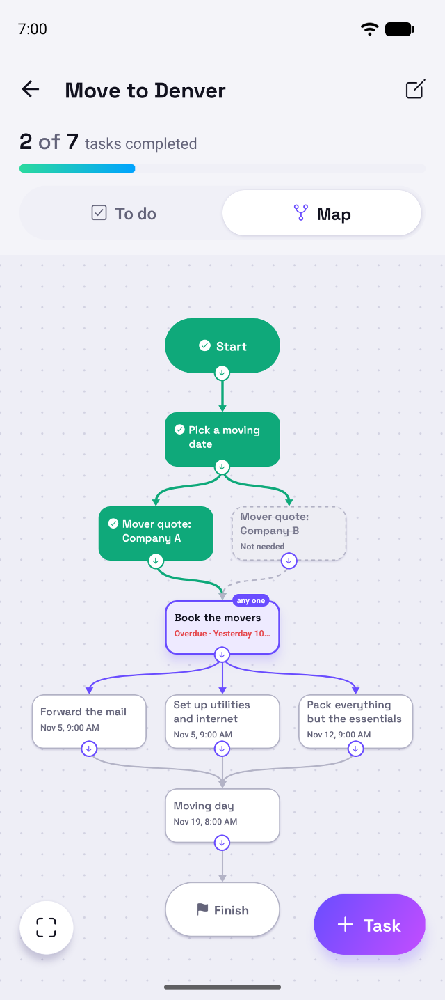
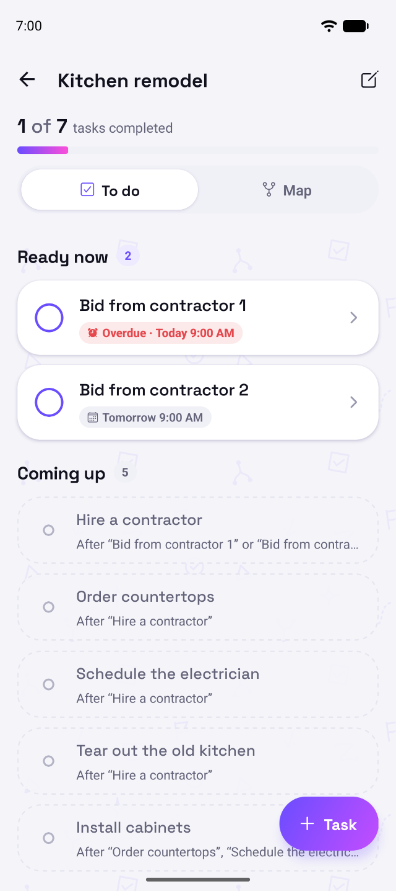
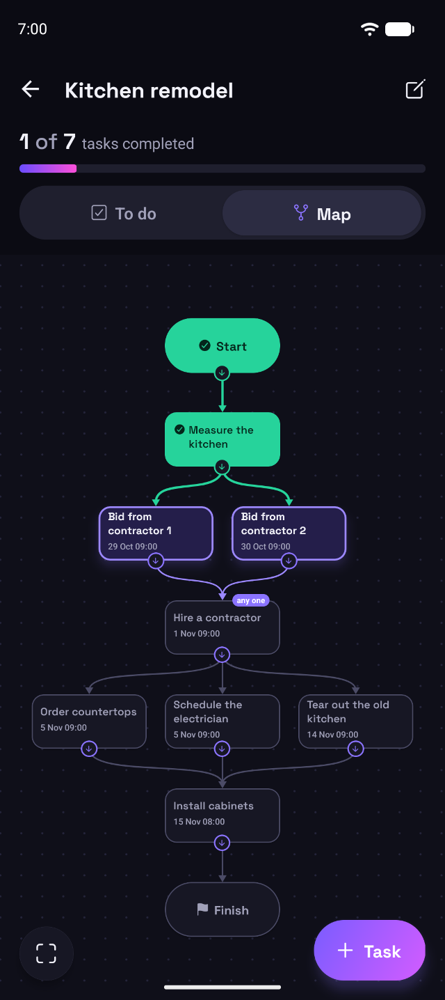

Move to a new home
Quotes, movers, mail, utilities and packing, in the right order.
8 tasksMoving, remodeling, planning an event: some tasks have to wait for others. Zayvori knows which, so your list only ever shows what you can actually do today.
Free to downloadNo accountWorks offline

Real projects aren’t a straight line. Here’s the same kitchen remodel both ways.
Seven things, all asking for attention. Which can you do today? You have to work it out again every time you look.

Two things you can do now. The rest waits its turn and says what it’s waiting for. When the first bid comes back, the other is set aside for you.
Every workflow has a map. Green is done, the highlighted tasks are ready, and anything you no longer need quietly steps aside.

Pick a template, choose a start date, and every due date falls into place. Save any workflow as your own template and reuse it as often as you like.
Quotes, movers, mail, utilities and packing, in the right order.
8 tasksBids first, then countertops, the electrician and tear-out side by side.
8 tasksResume and research together, then the letter, the interview and the follow-up.
6 tasksVenue, invitations and food side by side, down to final numbers.
6 tasksA heads-up before something’s due, another when it is, and a morning summary. Mark it complete right from the notification.
“4 of 9 tasks completed” and a bar that fills as you go. Changed your mind? Undo is one tap. Finish the last task and there’s confetti.
Follows your phone, or pick your own. Every workflow gets its own colors, so you can spot it at a glance.
Start from a template, or from scratch. Add the next task, one alongside or one in between, and give anything a due date.
Every due date falls into place. Tap Begin and your To do view fills with just the things you can do right now.
Tick tasks off in the app or from a reminder. What’s next unlocks by itself, until the last tick finishes the job.
There’s no account to make and no server holding your tasks. Zayvori keeps everything on your device, so it works anywhere and nobody else sees your workflows. (If you use Describe it, only the description you type is sent, to draft the steps.) Back up to a file whenever you like and keep it in Drive, your email or your files, ready for a new phone.
Zayvori is in final testing. Want to hear when it’s out, or try it early?
Email us to get notified We'll only use your email to reply. No mailing list.